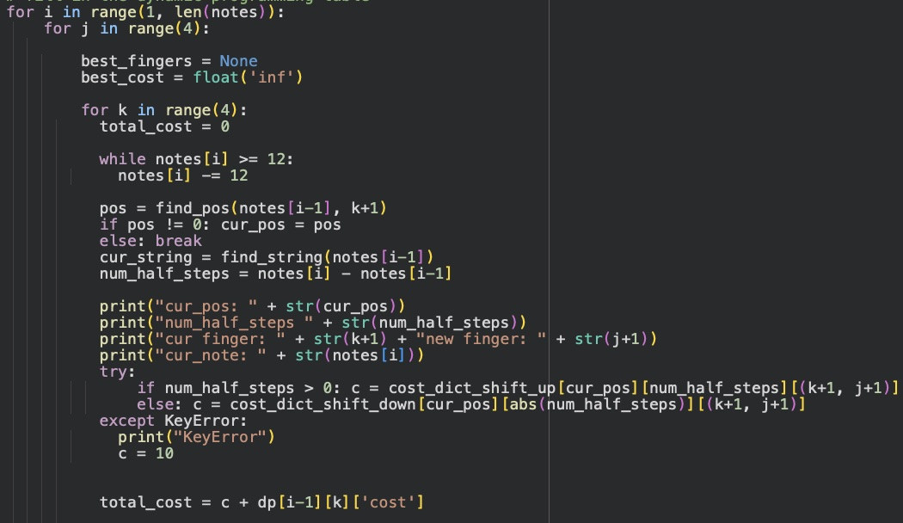

Fingering Optimization Algorithm
The very first cello fingering optimization algorithm based on dynamic programming.

Background/Origin
As principal cellist of my school's orchestra and SFSYO, I often noticed that my peers had trouble with fingering. I noticed similar things when I mentored younger students as well. A seemingly difficult passage could in fact be made easy with optimal fingering, streamlining cello playing. This inspired me to design an algorithm that could optimize fingering choices given a set of music notes.
Coding the Algorithm
In a nutshell, this algorithm takes in a set of values that correspond to specific notes on the cello then runs them through my dynamic programming algorithm which optimizes the total cost of each possible path (similar to Traveling Salesman Problem approach). To do this, I implemented python dictionaries that documented the cost of each possible shift, labeling each shift with a number, representing its difficulty. The algorithm would then add up all these "difficulty" numbers to find the set of fingerings that is least costly and return it to the user. For more details, check out my published paper below.
Final Notes / Next Steps
Given that this algorithm was coded for the cello, it could in turn be applied to all bowed instruments alike. Users could simply change the cost tables, and be able to personalize the algorithm for their own use, as every musician has their own fingering preferences. This makes the code very versatile. As a start, I have only documented the cost tables to the 4th position on the cello, however with time, the tables would come to encompass all of the cello, and allow for a full-scale fingering optimizer. Another future step is to turn this algorithm into an app that allows users with varying experiences to use.